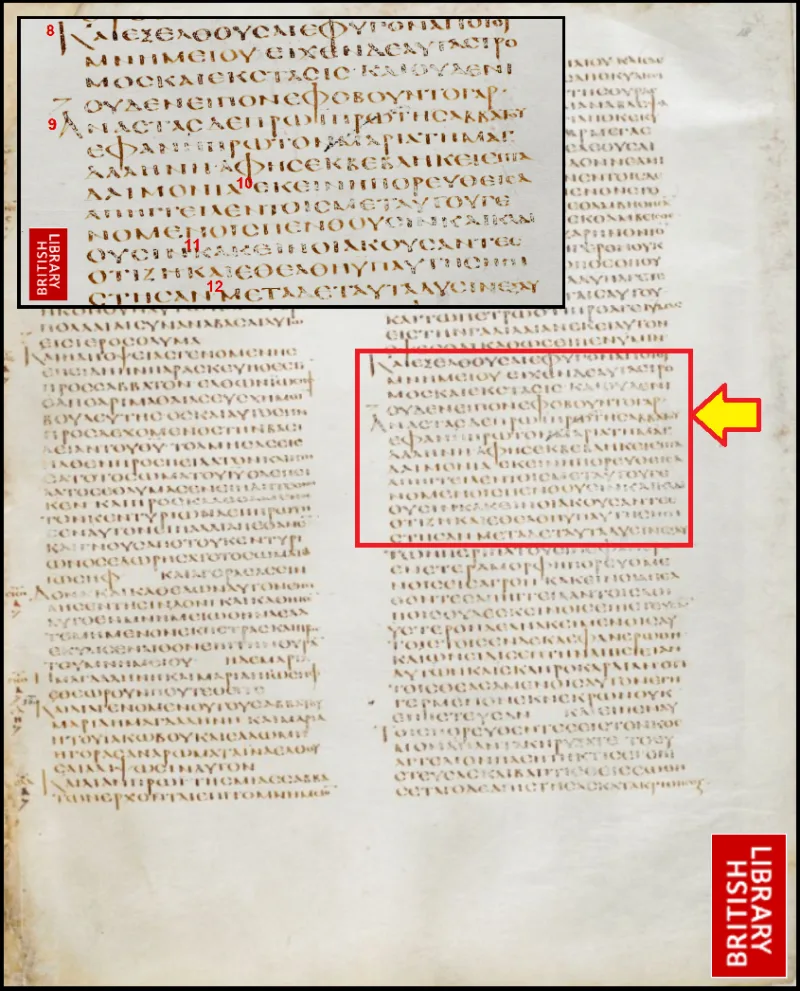
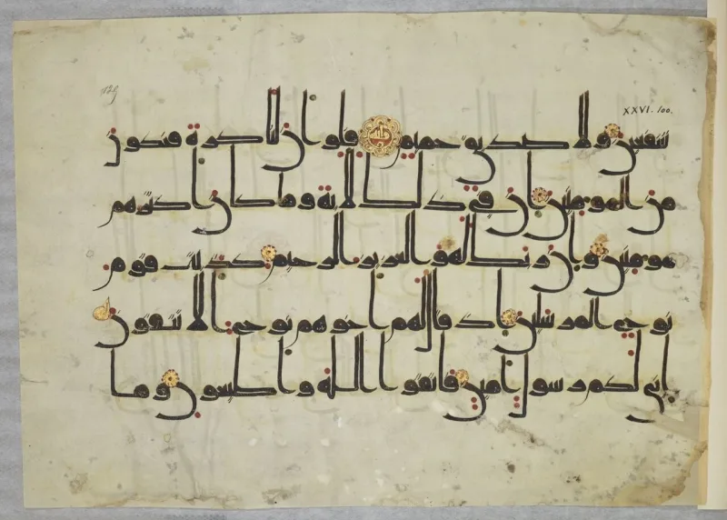

The Quran orders Christians to judge by the Gospel
UnrefutedNo good counter-argument has been published by Muslim scholars.
The Quran sets a test
Quran 10:94 tells Muhammad: "If you are in doubt about what We have revealed to you, then ask those who have been reading the Scripture before you." Quran 5:47 commands: "Let the People of the Gospel judge by what Allah has revealed therein." Whoever does not is called defiantly disobedient.
Now run the test
In 632 AD every community called People of the Gospel held one thing. The fourfold Gospel.
Its text is fixed by Codex Sinaiticus and Codex Vaticanus, two centuries earlier. Judge by that Gospel and it says Jesus was crucified, rose, and is the divine Son.
The Muslim answer, at full strength
Classical tafsir handles both verses. Al-Tabari and Ibn Kathir read 10:94 as aimed at doubters, not at Muhammad.
The ones to ask are honest scholars of the Book, like Abdullah ibn Salam, who accepted Muhammad. On 5:47, Islamweb fatwa 92519 says judge by what Allah truly revealed in the Injil.
That means its genuine core, not later church additions.
Where that runs out
Each escape needs the answer before the test. Filtering the judges down to those who already agree empties 10:94.
The verse names no such filter. Judging by the genuine core needs a rule for which core is genuine.
The only rule offered is agreement with the Quran, and that is the book being tested.
How strong is this argument?
Strong for you. No published answer holds.
There was no other Gospel in Christian hands in 632 AD. So the command has one possible meaning, and the test returns a verdict against the book that set it.
What to say
"Quran 5:47 tells Christians to judge by the Gospel. May I show you what it says?"



How they answer this — at its strongest
They say the ones to ask were honest Jewish scholars, not Christians in general.
Classical tafsir, the old commentaries, handles both verses. Al-Tabari and Ibn Kathir read 10:94 as a rhetorical move. The address is formally to Muhammad, but it is really aimed at doubters. The ones to ask are the honest scholars of the Book. Abdullah ibn Salam is the model, since he recognised Muhammad foretold in their texts. It is not Christians at large, on matters of doctrine.
On 5:47, Islamweb fatwa 92519 gives the reply. The command is to judge by what Allah actually revealed in the Injil. That means the genuine core, including Muhammad's description and God's law. It does not mean every doctrine the church later layered on top. Telling people to use a book's real content is not endorsing its corruptions. And the Quran's Injil is the revelation given to Jesus, not the four life-stories written by others.
The verdict
Strong for you: each escape needs the answer before the test is run.
Each escape is circular. Filtering the judges down to those who already agree guts 10:94 as a test. The verse names no such filter, and it assumes the Scripture consulted is reliable. Judging by the genuine core needs a rule for which content is genuine. The only rule offered is agreement with the Quran, which is the book under test.
The real Injil is historically empty. No 7th-century community called People of the Gospel held any book but the fourfold Gospel. So the command in 5:47 has one possible target. It is the text that refutes the Quran's account of Christ. The test stands as designed, and the Quran fails it.
Sources
- Quranic Arabic Corpus — Quran 10:94
- QuranX — classical tafsirs on 5:47
- The Islamic Dilemma (tract summarizing the argument)
- Jesus to Muslims — Does the Qur'an refer to the Torah and the Gospel?